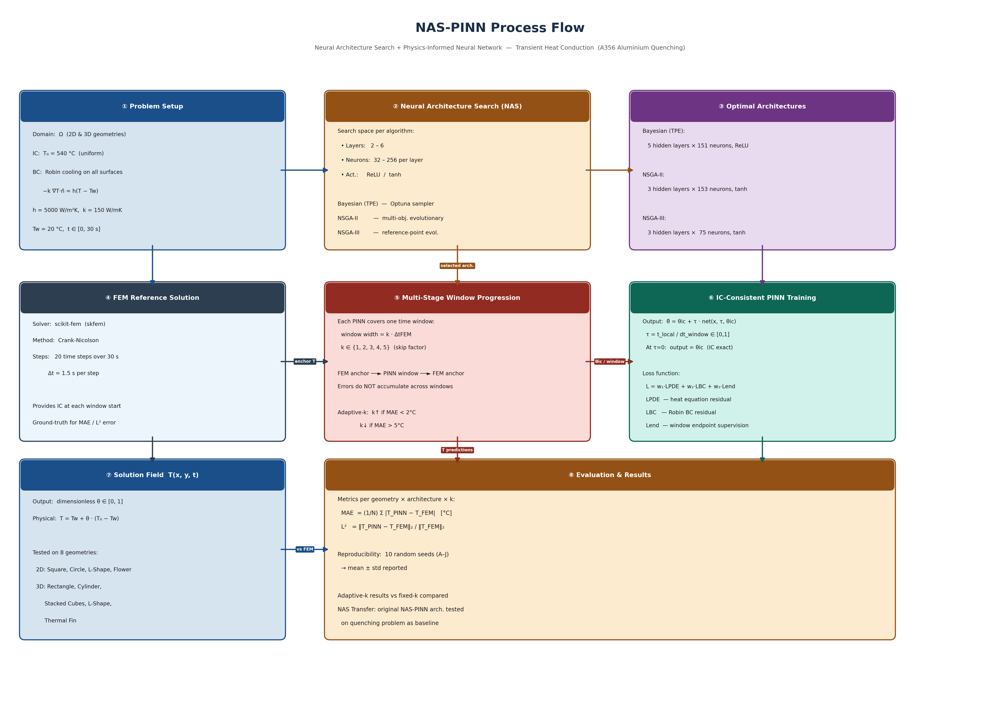
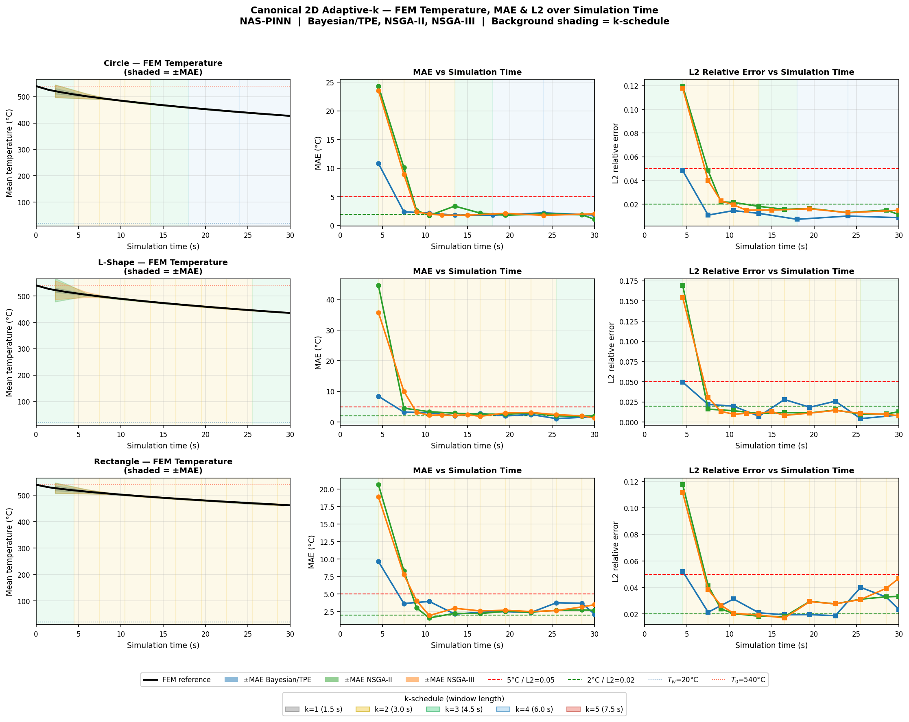
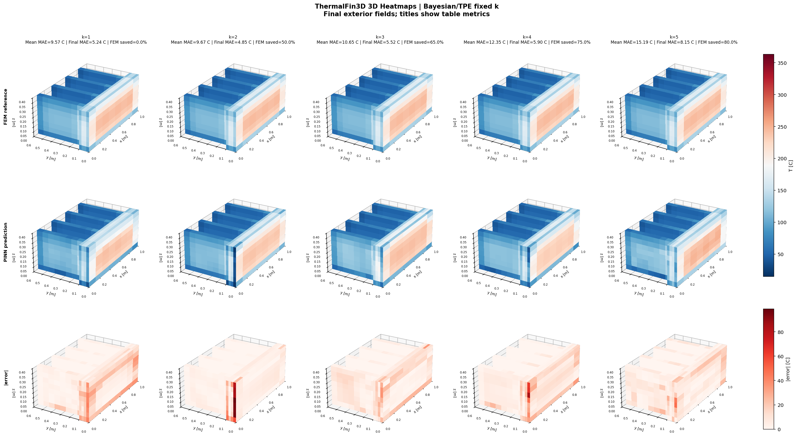

Abstract
This thesis extends the NAS-PINN framework of Wang & Zhong (2024) to transient heat transfer by introducing a Multi-Step Window Prediction (MSWP) strategy: the simulation is divided into short time windows, and a Physics-Informed Neural Network (PINN) predicts the temperature field within each window, periodically re-anchored by a FEM solve. A skip factor k controls the trade-off between accuracy and FEM cost. Three architectures found via Neural Architecture Search (NAS) are evaluated across ten benchmark geometries in 2D, 3D, and a 3D Thermal Fin, achieving up to 85% reduction in FEM solver calls while maintaining a mean absolute error below 15°C.
Method

Skip Factor k
The skip factor k is the central control parameter. It sets how many FEM solver calls are replaced by PINN predictions in each group of windows.
An adaptive-k controller removes the need to choose k manually. After each window, the controller compares the PINN prediction error to two thresholds: if error is low it promotes k (skip more FEM calls); if error is high it demotes k (call FEM more often). This allows the system to respond to the physics automatically — skipping more during the slow relaxation phase and anchoring more frequently during the steep early transient.
NAS-Selected Architectures
5 hidden layers × 151 neurons, ReLU activation, Fourier embedding. Largest capacity (~93K parameters). Best on irregular geometries.
3 hidden layers × 153 neurons, tanh activation. Compact, competitive on smooth geometries.
3 hidden layers × 75 neurons, tanh activation. Smallest footprint. Performs similarly to NSGA-II on simple domains.
2D Adaptive-k & NAS Transfer Comparison
Four 2D benchmark domains — Square, Circle, L-Shape, Flower — were used to evaluate the adaptive-k controller and to compare the NAS Transfer architecture from Wang & Zhong (2024) against the three architectures found in this work. The NAS Transfer architecture ([90, 70, 30, 110]) was taken directly from the reference paper without retraining.
On smooth, regular geometries (Square, Circle) all four architectures produce nearly identical results. On the L-Shape and Flower — which have reentrant corners and concave boundaries that concentrate temperature gradients locally — Bayesian/TPE achieves significantly lower error than both the NAS Transfer baseline and the compact NSGA variants. This demonstrates that geometry-specific NAS adds value only when the target domain contains features absent from the original NAS validation domain.

| Domain | Best Architecture | MAE (°C) | FEM Saving | k-Schedule (seed 0) |
|---|---|---|---|---|
| Square | Bayesian/TPE | 1.64 ± 0.10 | 85% | 1-1-1-1-2-3-4-5-5 |
| Circle | Bayesian/TPE | 1.53 ± 0.11 | 85% | 1-1-1-1-2-3-4-5-5 |
| L-Shape | Bayesian/TPE | 1.36 ± 0.04 | 85% | 1-1-1-1-2-2-3-4-5 |
| Flower | Bayesian/TPE | 1.74 ± 0.11 | 85% | 1-1-1-1-2-3-4-5-5 |
2D Canonical Fixed-k Sweep
Three canonical 2D domains — Rectangle, Circle, L-Shape — were used for a systematic fixed-k sweep across all five skip factors (k = 1 to 5). All three NAS-found architectures were tested at every k value with ten independent random seeds each, giving 45 configurations in total.
Bayesian/TPE achieves the lowest error across all domains and all values of k. On the Rectangle (simplest geometry), all three architectures remain well below the 15°C engineering acceptance threshold even at maximum k=5. On the L-Shape, the compact NSGA variants approach the threshold at higher k values, while Bayesian/TPE stays comfortably below. The ten-seed standard deviation confirms stable, reproducible training.

| Domain | Architecture | k=1 (0%) | k=3 (65%) | k=5 (80%) |
|---|---|---|---|---|
| Rectangle | ||||
| Bayesian/TPE | 2.12 ± 0.23 | 3.19 ± 0.57 | 4.03 ± 0.66 | |
| NSGA-II | 3.44 ± 0.49 | 6.76 ± 1.14 | 9.66 ± 1.30 | |
| NSGA-III | 3.52 ± 0.48 | 6.10 ± 0.45 | 9.28 ± 1.64 | |
| L-Shape | ||||
| Bayesian/TPE | 2.54 ± 0.31 | 4.07 ± 0.62 | 4.81 ± 0.75 | |
| NSGA-II | 4.62 ± 0.68 | 9.22 ± 1.61 | 13.40 ± 2.88 | |
| NSGA-III | 4.89 ± 0.82 | 9.11 ± 1.43 | 14.30 ± 2.45 | |
Values are ten-seed mean ± std (MAE in °C). Engineering acceptance threshold: ≤ 15°C.
3D Canonical Fixed-k Sweep
Four 3D benchmark domains — Cylinder, L-Shape, Rectangular, Stacked — extend the canonical study into three dimensions. Moving from 2D to 3D significantly increases the complexity of the temperature field: the boundary conditions act on three-dimensional surfaces, and the spatial gradients are harder to represent with a fixed network capacity.
Bayesian/TPE continues to outperform the NSGA variants across all four 3D domains. All architectures pass the 15°C threshold at k=1. At k=5, Bayesian/TPE remains within the acceptance boundary on the Cylinder and Rectangular domains. The adaptive-k controller, shown alongside the fixed-k results, automatically finds near-optimal k schedules and achieves similar accuracy to the best fixed-k configuration with comparable FEM saving.

| Domain | Architecture | Best MAE (°C) | Best k | FEM Saving |
|---|---|---|---|---|
| Cylinder | Bayesian/TPE | 5.61 | k=1 | 0% (adaptive: 75%) |
| L-Shape 3D | Bayesian/TPE | 8.43 | k=3 | 65% |
| Rectangular | Bayesian/TPE | 6.12 | k=1 | 0% (adaptive: 75%) |
| Stacked | Bayesian/TPE | 13.70 | k=1 | 0% |
Thermal Fin (3D)
The Thermal Fin is a 3D geometry adapted from the RBniCS benchmark library. It consists of a central rod with four protruding fins, each with different thermal conductivity. This benchmark tests the framework on a geometry that combines interior material interfaces, irregular fin boundaries, and strong local gradient variation — all in three dimensions.
Two architectural features proved essential on this benchmark. Fourier embedding — which maps spatial coordinates through a learned set of sinusoidal features before passing them to the network — reduced MAE by 1.8–4.4°C compared to standard coordinate input, because it allows the network to represent the sharp gradients at the fin-root junctions more accurately. Endpoint supervision — forcing the network to match the FEM solution at the last time step of each window — prevented error drift between windows. Without it, MAE reached 58–92°C.
All three NAS architectures pass the 15°C threshold on the Thermal Fin under MSWP. PINN-only rollout (no FEM anchoring) fails completely, with errors reaching 63–217°C within the first few windows.


| Architecture | Fourier Embedding | MAE at k=1 (°C) | MAE at k=5 (°C) | Adaptive MAE (°C) |
|---|---|---|---|---|
| Bayesian/TPE | Yes | 9.89 | 11.72 | 11.26 |
| NSGA-II | No | 10.71 | 12.34 | 10.54 |
| NSGA-III | No | 12.04 | 14.12 | 13.21 |
| PINN-only (best) | — | 63–217°C (fails — no FEM anchoring) | ||
Conclusions
- ✓ MSWP reduces FEM cost by up to 85% while maintaining mean absolute error below the 15°C engineering acceptance threshold across all ten benchmark geometries in 2D, 3D, and the Thermal Fin.
- ✓ FEM anchoring is not optional. PINN-only rollout (without periodic FEM re-anchoring) fails on every benchmark that involves irregular geometry or complex boundary conditions — errors reach 60–217°C within a few windows. The FEM anchor is a structural requirement of the prediction strategy, not a fallback.
- ✓ The adaptive-k controller matches or outperforms the best fixed-k configuration without any manual tuning. It responds to the physics of the quench: using FEM more frequently during the steep early transient and increasing the skip factor as the field relaxes — achieving 83–85% saving automatically.
- ✓ Bayesian/TPE with Fourier embedding achieves the lowest error on geometrically complex domains. On smooth, regular geometries, all three NAS architectures perform comparably, confirming that geometry-specific NAS adds the most value when the target domain contains features absent from the search validation domain.
References
- Wang, Y. & Zhong, L. (2024). NAS-PINN: Neural architecture search-guided physics-informed neural network for solving PDEs. Journal of Computational Physics, 496, 112603. doi:10.1016/j.jcp.2023.112603 arXiv
- Mortensen et al. (2026). FEM-based thermomechanical simulation of water quenching for A356 aluminium subframes. University of Agder.